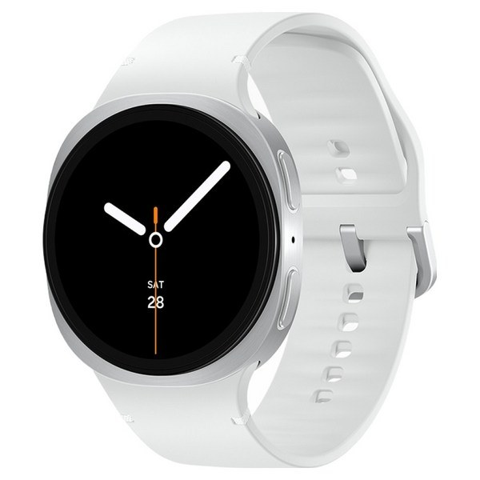

삼성전자 Samsung
KR · 대한민국 · 글로벌 종합가전, 비스포크 · 대표 제품: 비스포크 냉장고, 그랑데 세탁기, 제트 청소기
추천 제품 12종 2026.11.24 TUE · No.003 기준
 삼성 QLED TV KQ85QF6AAFXKR 85인치1,519,000원TV · 정가 대비 41%↓ · 쿠팡 리뷰 3,605 · 소싱 점수 3.5
삼성 QLED TV KQ85QF6AAFXKR 85인치1,519,000원TV · 정가 대비 41%↓ · 쿠팡 리뷰 3,605 · 소싱 점수 3.5
삼성 갤럭시워치8 40mm 블루투스 SM-L320N398,050원워치 · 쿠팡 리뷰 9,128 · 평점 5.0 · 소싱 점수 3.5 삼성 갤럭시 버즈3 프로 SM-R630N154,160원이어폰 · 쿠팡 리뷰 1,240 · 평점 5.0 · 소싱 점수 3.5
삼성 갤럭시 버즈3 프로 SM-R630N154,160원이어폰 · 쿠팡 리뷰 1,240 · 평점 5.0 · 소싱 점수 3.5 삼성 비스포크 AI 스팀 울트라 VR90F01AAG1,493,460원청소 · 다나와 로봇청소기 인기 2위 · CES 2026 AI 기능 · 소싱 점수 3.0
삼성 비스포크 AI 스팀 울트라 VR90F01AAG1,493,460원청소 · 다나와 로봇청소기 인기 2위 · CES 2026 AI 기능 · 소싱 점수 3.0 삼성 스마트TV KU43F6050FFXKR 43인치437,980원TV · 정가 대비 12%↓ · 쿠팡 리뷰 10 · 소싱 점수 3.0
삼성 스마트TV KU43F6050FFXKR 43인치437,980원TV · 정가 대비 12%↓ · 쿠팡 리뷰 10 · 소싱 점수 3.0 삼성 OLED TV KQ65SF8EAEXKR 65인치2,290,000원TV · 쿠팡 리뷰 221 · 평점 5.0 · 소싱 점수 3.0
삼성 OLED TV KQ65SF8EAEXKR 65인치2,290,000원TV · 쿠팡 리뷰 221 · 평점 5.0 · 소싱 점수 3.0 삼성 OLED TV KQ48SH85AEXKR 48인치1,140,000원TV · 정가 대비 36%↓ · 쿠팡 리뷰 46 · 소싱 점수 3.0
삼성 OLED TV KQ48SH85AEXKR 48인치1,140,000원TV · 정가 대비 36%↓ · 쿠팡 리뷰 46 · 소싱 점수 3.0 삼성 갤럭시 S26 256GB 자급제 SM-S942N1,193,000원스마트폰 · 정가 대비 15%↓ · 쿠팡 리뷰 10,178 · 소싱 점수 3.0
삼성 갤럭시 S26 256GB 자급제 SM-S942N1,193,000원스마트폰 · 정가 대비 15%↓ · 쿠팡 리뷰 10,178 · 소싱 점수 3.0 삼성 갤럭시 Z 폴드8 256GB 자급제 SM-F971N2,164,100원스마트폰 · 쿠팡 리뷰 6,341 · 평점 5.0 · 소싱 점수 3.0
삼성 갤럭시 Z 폴드8 256GB 자급제 SM-F971N2,164,100원스마트폰 · 쿠팡 리뷰 6,341 · 평점 5.0 · 소싱 점수 3.0 삼성 갤럭시 링 티타늄 블랙 5호309,000원워치 · 쿠팡 리뷰 145 · 평점 5.0 · 소싱 점수 3.0
삼성 갤럭시 링 티타늄 블랙 5호309,000원워치 · 쿠팡 리뷰 145 · 평점 5.0 · 소싱 점수 3.0 삼성 갤럭시탭 S11 128GB Wi-Fi (보호필름 패키지)1,215,000원태블릿 · 쿠팡 리뷰 95 · 평점 5.0 · 소싱 점수 3.0
삼성 갤럭시탭 S11 128GB Wi-Fi (보호필름 패키지)1,215,000원태블릿 · 쿠팡 리뷰 95 · 평점 5.0 · 소싱 점수 3.0 삼성 비스포크 AI 콤보 세탁건조기 WD80H25BHW2,610,710원대형가전 · 다나와 올인원 세탁건조기 인기 2위 · 소싱 점수 2.5
삼성 비스포크 AI 콤보 세탁건조기 WD80H25BHW2,610,710원대형가전 · 다나와 올인원 세탁건조기 인기 2위 · 소싱 점수 2.5
관련 뉴스
- 3분기 TV 출하: TCL·하이센스 1,493만 대, 삼성·LG 추월
트렌드포스 집계 3분기 세계 TV 출하는 4,794만 대(−3.6%). TCL·하이센스 합산 1,493만 대가 삼성·LG 합산 1,460만 대를 33만 대 앞섰습니다.
2026.11.21 · 서울경제TV - 올해 미니 LED TV 출하 2,878만 대 전망(+116%)
트렌드포스 전망. 보급률은 약 15%로 삼성이 점유율 26%로 1위, RGB 미니 LED(마이크로 RGB 포함)는 200만 대를 넘을 것으로 봤습니다.
2026.11.16 · 트렌드포스 - 美 블프 RGB TV 할인 경쟁: 삼성 39%·LG 40%·하이센스 44%
베스트바이 행사에서 75형 기준 삼성 마이크로 RGB는 1,699.99달러, LG 마이크로 RGB evo는 2,999.99달러로 내렸습니다.
2026.11.23 · 전자신문 - 삼성, 내년 갤럭시 워치 신제품 안 낸다
MX사업부 2분기 연속 적자 속에 워치 출시 주기를 2년으로 바꿔, 2018년부터 이어진 연간 신제품이 끊깁니다. 4분기 갤럭시 A 생산도 약 20% 줄입니다.
2026.11.22 · 전자신문 - 3분기 OLED 모니터 출하 2배, MSI 첫 2위
트렌드포스 집계. 에이수스 21.7%, MSI 14.5%, 삼성전자 11.3%, LG전자 8.6% 순입니다.
2026.11.18 · TechPowerUp(트렌드포스 발표) - 상반기 로봇청소기 판매 점유율: 삼성 27%·드리미 18%·로보락 16%
다나와 1~6월 판매량 기준. 모바 9%, LG전자 8%가 뒤를 이었고 150만 원대 프리미엄과 100만 원 이하 실속형으로 양극화됐습니다.
2026 상반기 · 다나와 기획전 - 삼성·LG, 로봇 ‘손’과 ‘두뇌’ 개발 경쟁
삼성은 7월 RX 태스크포스를 꾸리고 구미에 로봇 데이터 팩토리를 계획. LG는 액추에이터 ‘액시엄’ 창원 시범 라인을 가동했습니다.
2026.11.10 · 뉴스토마토 - 레인보우로보틱스, 바퀴 달린 양팔로봇 RB-Y2 공개
삼성전자가 최대주주인 레인보우로보틱스가 로보월드 2026에서 제조 현장용 이동형 양팔로봇을 선보였습니다.
2026.11.06 · 비즈워치
가격·순위는 2026-11-24 다나와 공개 자료 기준이며 판매처마다 다를 수 있습니다. 각 제품 페이지에 출처가 있습니다.